🎇 PNS-脊神經
脊神經概論
脊神經-共同結構
| 脊神經(31對) | 根(root) | 枝(ramus)：皆有感覺+運動 |
|---|---|---|
| 頸(C8) 胸(T12) 腰(L5) 薦(S5) 尾(Co1) | 腹根(純運動) ★[109-1]背根(純感覺) | 腹枝：支配頸、軀幹前壁及四肢 交通枝：支配內臟 背枝：支配頸、軀幹後壁 |
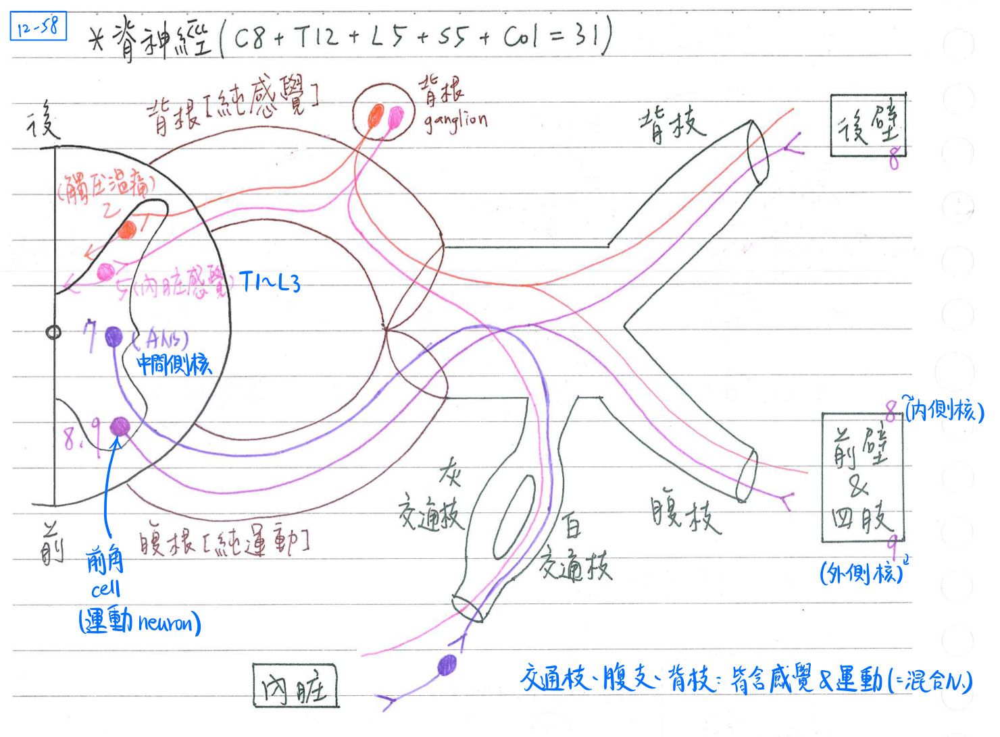
脊神經-脊神經叢(spinal plexus)：5大神經叢
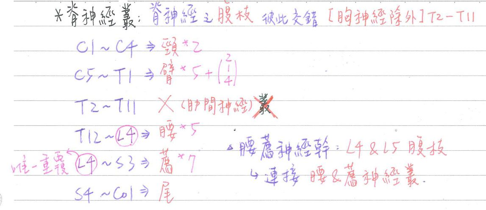
- 定義：脊神經(胸神經除外)之腹枝，彼此交錯形成神經叢
- 頸神經叢(cervicalplexus)：C1~C4
- 臂神經叢(brachial plexus)：C5~C8、T1
※胸神經不形成神經叢(T2~T11)
- 腰神經叢(lumbar plexus)：T12、L1~L4
- 腰薦神經幹(lumbosacral trunk)：有L4(唯一重複)、L5之腹枝構成，連接腰神經叢 & 薦神經叢；沿骨盆緣下行。
- 薦神經叢(sacral plexus)：L4〜L5，S1〜S3 [tip：45123]
- 尾神經叢(coccygeal plexus)：S4〜S5、Co1
脊神經-皮節(dermatome) [根據netter修改過]
- 定義：受到單一脊神經內，感覺神經纖維所支配的皮膚區域
- 共29節；C1及Co1無支配皮節(最上&最下)
- 皮節支配的皮膚區域部份重疊
| 皮節 | 支配區域 | 皮節 | 支配區域 |
|---|---|---|---|
| C5 | 鎖骨(clavicle) | L1 | 鼠蹊部(inguinal) |
| C5, C6 | 上肢外側 | L1~L4 | 下肢的前內側 |
| C8, T1 | 上肢內側 | L4~S1 | 足部(foot) |
| ★C6 | 上肢大拇指 | L4 | 下肢大拇趾內側(great toe) |
| C8 | 上肢的無名指、小指 | L5~S2 | 下肢的後外側 |
| T4 | 乳頭周圍 | S1 | 足部外側緣&小指(little toe) |
| T10 | 肚臍周圍 | S2~S4 | 會陰部(perineum) |
| S5 | 肛門周圍 |
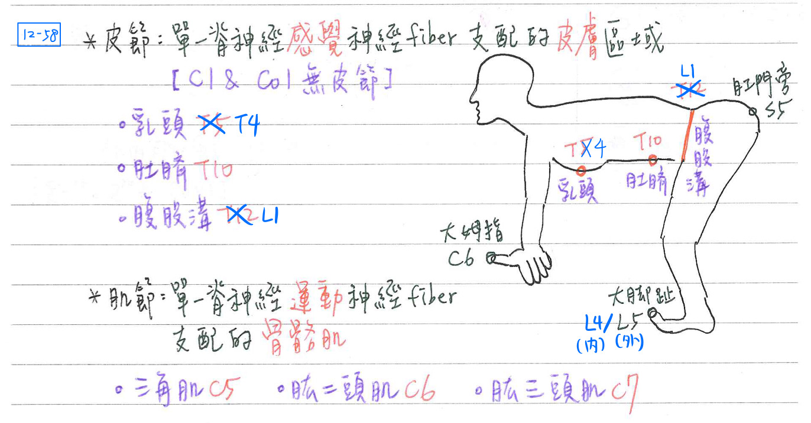
脊神經-肌節(myotome) [沒考過]
- 受到單一脊神經根內運動神經纖維所支配的骨骼肌
- 三角肌(C5)
- 二頭肌(C6)
- 三頭肌(C7)
- 伸姆趾長肌(L5)
- 腓腸肌(S1)
- 橫膈(C3~C5)：膈N
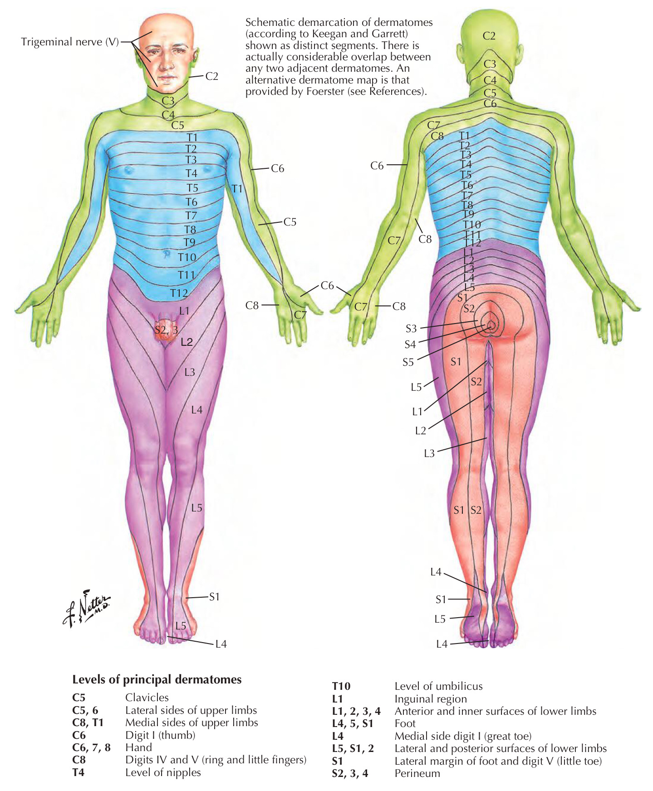
脊神經個論
頸神經叢
- 膈N(phrenic n；C3~C5)：支配橫膈膜(吸氣最重要肌肉)
- ★[103-1]通過：
- 前斜角肌之前方
- 鎖骨下A之前方
- 總頸A外側
- 內頸V之後外側
- 靜脈角[頭臂V起端]後方進入胸腔
- 在上縱膈腔：
- 右膈N沿上腔静脈與縱膈性壁層肋膜之間下行；通過下腔V裂孔
- 左膈N沿主動脈弓與縱膈性壁層肋膜之間下行；通過無名孔
- 在下縱膈腔：左右皆經肺根之前、纖维性心包膜之內至橫隔膜(走在心包膜內)
- ★[103-1]通過：
- 頸襻(ansa cervicalis；C1~C3)：支配★前頸部(舌骨下)肌肉
- C1分枝：先與舌下N伴行，稍後離開
- C1部份神經纖維★支配甲狀舌骨肌、頦舌骨肌等
- C1部份神經纖維★(腹側枝)構成頸襻之上根(sup. root)，沿內頸A下行
- 降頸神經(C2~C3)構成頸襻之下根(inf.root),沿內頸V下行
- 上根與下根共同形成頸襻N→支配★肩胛舌骨肌、胸骨舌骨肌、胸骨甲狀軟骨肌
- 皮枝(cutaneous branch)：
- ★小枕N(lesser occipital；C2)：支配耳後頭皮→頸椎椎間盤突出時可能壓到
- ★大耳N(great auricular；C2~C3)：支配外耳區域
- ★大耳N由後向前橫跨胸鎖乳突肌之前方，支配下頷骨角、外耳區域
- 橫頸N(transverse cervical；C2~C3)：支配前頸、外頸
- 鎖骨上N(supraclavicular,C3~C4)：支配鎖骨上區域
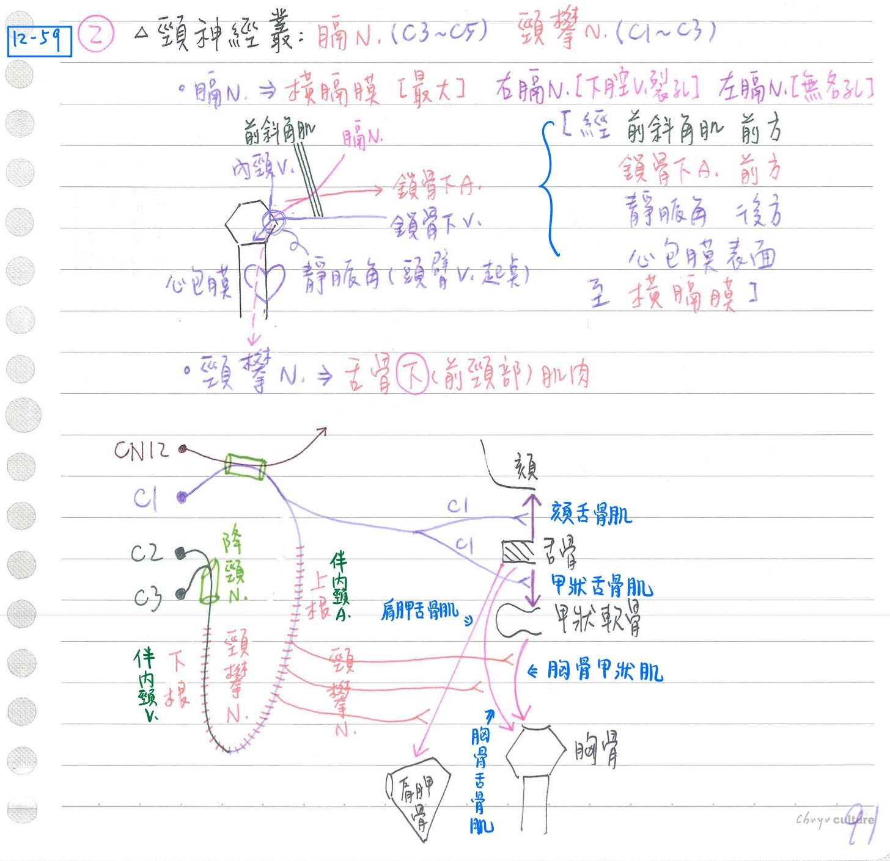
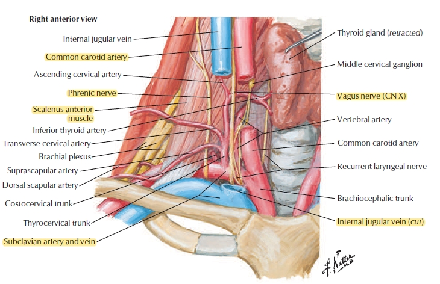
胸神經(不形成神經叢)
- 肋間N(intercostal n；T1~T11)：由T1~T11胸神經之腹枝構成
- 肋間N與伴行血管沿個自肋骨下緣由後前行走
- 位於最內(胸橫肌、腹橫肌)與中間肌層(內肋間肌、腹內斜肌)之間
- 由上而下依序為：肋間V、肋間A、肋間N(VAN)
- 皮枝(cutancous branch)：支配皮膚
- 側皮枝(lateral)：自★腋中線(midaxillary line)鑽出肌層
- 前皮枝(anterior)：自胸骨旁線(parasternal line)鑽出肌層
- T1~T6支配胸壁皮膚；T7~T12支配前腹壁皮膚
- T1肋間神經參與形成臂神經叢
備註
T1應該沒有參與形成頸神經叢(醫師解剖有誤)
- L1相關之髂腹下N(iliohypogastric n)&髂鼠蹊N(ilioinguinal n.)具類似之路徑，並支配前腹壁皮膚
- 肋間N與伴行血管沿個自肋骨下緣由後前行走
- 肋下N(subcostal n；T12)：由T12胸神經之腹枝構成
臂神經叢(brachial plexus；C5-T1) [畫統整圖]
- 分5段：根(root)x5→幹(trunk)x3→部(division)x6→索(cord)x3→終末分枝(terminal branch)x5
- 根(root)：5個→C5~T1脊神經之腹枝
- 長胸N(long thoracic；C5~C7)：→前鋸肌
- 長胸N與外胸A(lateral thorcic)伴行
- 背肩胛N(dorsal scapular；C5)：→提肩胛骨肌、菱形大肌、菱形小肌
- 長胸N(long thoracic；C5~C7)：→前鋸肌
- 幹(trunk)：3個→上幹、中幹、下幹
- 上幹：肩胛上N(suprascapular)→棘上肌、棘下肌
- 部(division)：6個→上幹、中幹、下幹各具前部、後部
- 索(cord)：3個→內索、外索、後索
- 外索：外胸N(lateral pectoral；C5~C7)→胸大肌
- 外胸N直接穿過胸鎖筋膜(clavipectoral fascia)
- 內索：內胸N(medial pectoral；C8~T1)→胸小肌、胸大肌
- 後索：
- 肩胛下N(subscapular)→肩胛下肌、大圓肌
- 胸背N(thoracodorsal)→闊背肌
- 外索：外胸N(lateral pectoral；C5~C7)→胸大肌
- 終末分枝(terminal branch)：
- 後索→橈N、腋N
- 外索→肌皮N
- 內索→尺N
- 內+外索→正中N
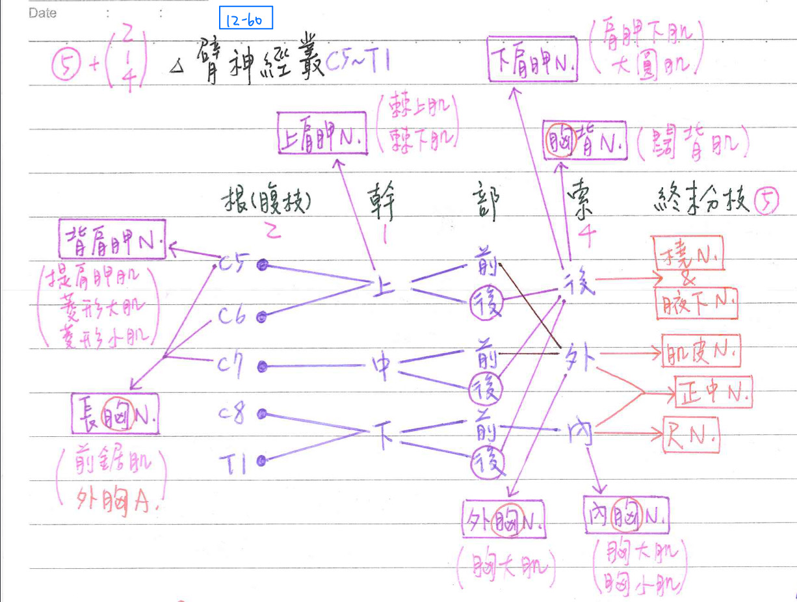
橈神經(radial nerve；C5〜T1)
- 為臂神經叢最大之神經
- 路徑：
- 途經三角間距(triangular interval)、橈神經溝(肱三頭肌外側頭&內側頭之間)、肱骨外上髁
- 與深肱A(上臂)、橈A(前臂)伴行
- 運動：
- 上臂後腔室：肱三頭肌(triceps)
- 前臂外腔室：橈側伸腕長肌、肱橈肌
- 前臂後腔室：橈側伸腕短肌、伸指肌、伸小指肌、尺側伸腕肌、肘肌、旋後肌(supinator)、外展拇指長肌、伸拇指短肌、伸拇指長肌、伸食指肌
- 感覺：上臀背側、前臂背側、手之背外側、手之腹外側(魚際區)
- 受損：垂腕症(drop wrist)[伸腕肌無法收縮]
- 受損原因：
- 肱骨幹骨折(最常見)
- 持拐杖(crutch palsy)：腋窩壓迫
- 週末夜症侯群(saturday night syndrome)：腋窩壓迫
- 受損原因：
- 橈N之最大分枝為後骨間N(post. interosseus n)，與後骨間A.(尺A.分支)伴行
尺神經(ulnar nerve；C8〜T1) [趴睡易壓到]
- 路徑：與肱A(上臂)、尺A(前臂)伴行；經肱骨內上髁(後方)、尺側屈腕肌的兩頭(肱骨頭&尺骨頭)之間、腕隧道的上表面
- 運動：
- 前臂前腔室(尺側)：尺側屈腕肌、屈指深肌(4th、5th)
- 手部：下魚際肌(外展小指肌、屈小指肌、對小指肌)、內收拇指肌、掌短肌、骨間肌、蚓狀肌(3rd、4th)
- 感覺：前臂之腹內側、手之腹內側、手之背內側
- 損傷：肱骨內上髁骨折→爪手(claw hand) [蚓狀肌無力收縮→無名指跟小指無法伸直]
- 正中N、尺N主要支配前臂&手部，其在上臂處沒有分枝
肌皮神經(musculocutaneous nerve；C5~C7)
- 路徑：肌皮N位於肱二頭肌、肱肌之間，穿越喙肱肌進入前臂
- 運動：上臂前腔室(肱二頭肌、肱肌、喙肱肌)
- 感覺：上臂腹側
- ★[107-2]終末枝為前臂外側皮N
- 損傷：肌皮N在高位受損→造成肱二頭肌及喙肱肌麻痺，但肱肌僅無力(肱肌亦受橈N.支配)
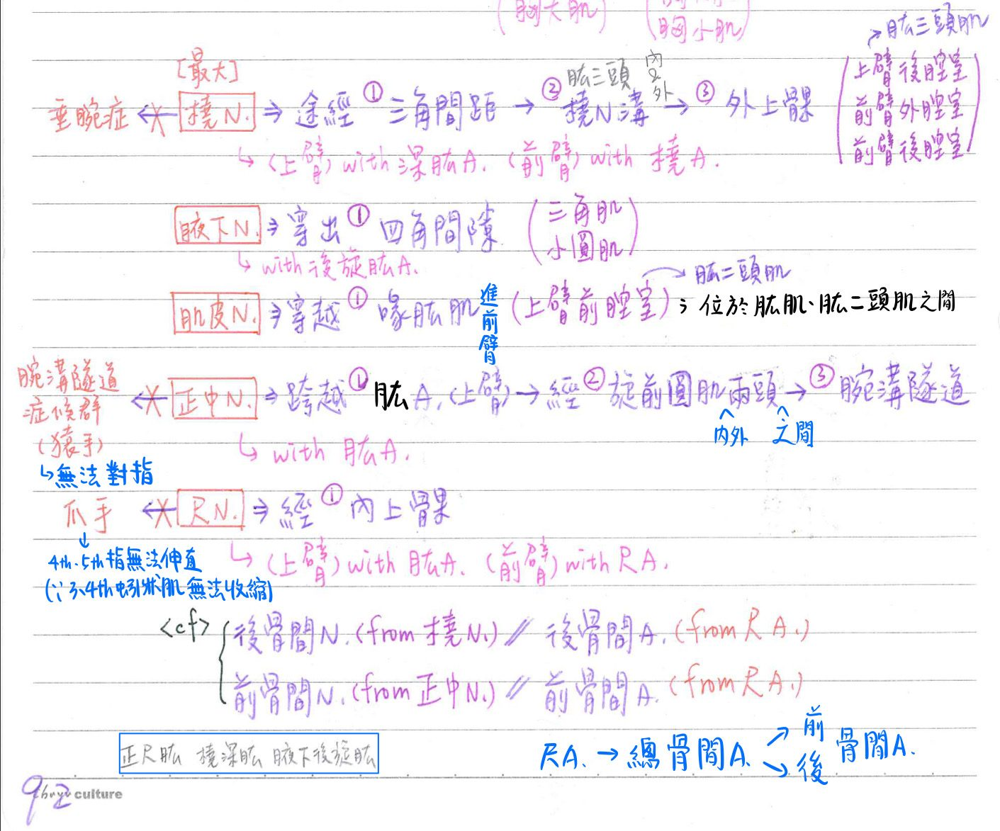
正中神經(median nerve；C5〜T1)
- 路徑：
- 與肱A伴行
- 在上臂跨越肱A(外→内側)、在肘窩位於旋前圓肌兩頭(肱骨頭&尺骨頭)之間、在腕部經腕隧道
- 運動：
- 前臂前腔室(尺側)：旋前圆肌、旋前方肌、橈側屈腕肌、掌長肌、屈指淺肌、屈指深肌(2nd、3rd)、屈拇指長肌
- 手部：魚際肌(對拇指肌、屈拇指短肌、外展拇指短肌)、蚓狀肌(1st、2nd)
- 感覺：前臂之腹外側、手之腹外側(魚際區除外)
- 損傷：壓迫到腕隧道(carpal tunnel)易受損
→猿手(ape hand)、姆指無法對指(opposition)
- 正中N之最大分枝：前骨間N(ant.interosseus n)，與前骨間A(尺A之分枝)伴行。
腋神經(axillary nerve；C5-C6)
- 腋下神經自上臂後方之四角間隙穿出
- 運動：三角肌、小圓肌
- 感覺：肩部
- 損傷：肩關節脫位、肱骨外科頸骨折
腰神經叢(T12、L1~L4)
股神經(femoral nerve；L2〜L4)
- 腰神經叢最大之神經；行於腰大肌&髂肌之間
- 運動：大腿前腔室(髂肌、腰大肌、股四頭肌、縫匠肌、恥骨肌)
- 感覺：大腿前側
- 隱N(saphenous n.)：為股N之皮膚感覺枝
- 位下肢內側，與大隱V伴行
- 司膝部、小腿內側、足部之感覺
- 隱N(saphenous n.)：為股N之皮膚感覺枝
閉孔神經(obturator nerve；L2~L4)
- 運動：大腿內腔室[內收肌群(內收大肌長肌/短肌)、肌薄肌、★[108-1]閉孔外肌、恥骨肌]
- 恥骨肌原則上由股N支配，但偶爾亦由閉孔N支配
- 內收大肌：
- 內收纖維：由閉孔N之支配
- 伸展纖維：由脛N之支配
- ★[106-1]閉孔N沿腰大肌內側下行，進入大腿後分成前、後枝：
- ★前支：內收長&短肌之間；支配內收短/長肌、股薄肌、恥骨肌(少部分)、hip joint
- ★後支：內收短肌&大肌之間；支配內收大肌、閉孔外肌、knee joint
- 感覺：大腿內側
髂腹下神經(iliohypogastric nerve；T12~L1)
- 運動：腹內斜肌、腹橫肌
- 感覺：支配鼠蹊部(L1皮節)
髂鼠蹊神經(ilioinguinal nerve；L1)
- 髂鼠蹊N途經鼠蹊管(inguinal canal)
- 運動：腹內斜肌、★[108-1]腹橫肌
- 感覺：支配陰囊/大陰唇(前半部)
生殖股神經(genitofemoral nerve；L1-L2)：分為運動&感覺 2支
- 由腰大肌淺層穿出，並沿腰大肌腹側向下行
- 生殖股N之生殖枝：位於精索(spermatic cord)內
- 運動：★[108-1]★[109-2]提睾肌(cremaster m.)←生殖枝(genital branch)
- 感覺：大腿內側←股枝(femoral branch)
- 生殖股N之股支、生殖枝參與提睾反射(cremasteric reflex)
股外側皮神經(lat. femoral cutaneous n.；L2~L3)
- 感覺：大腿外側感覺
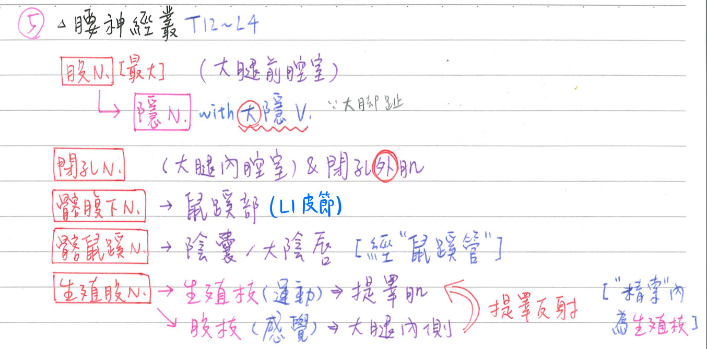
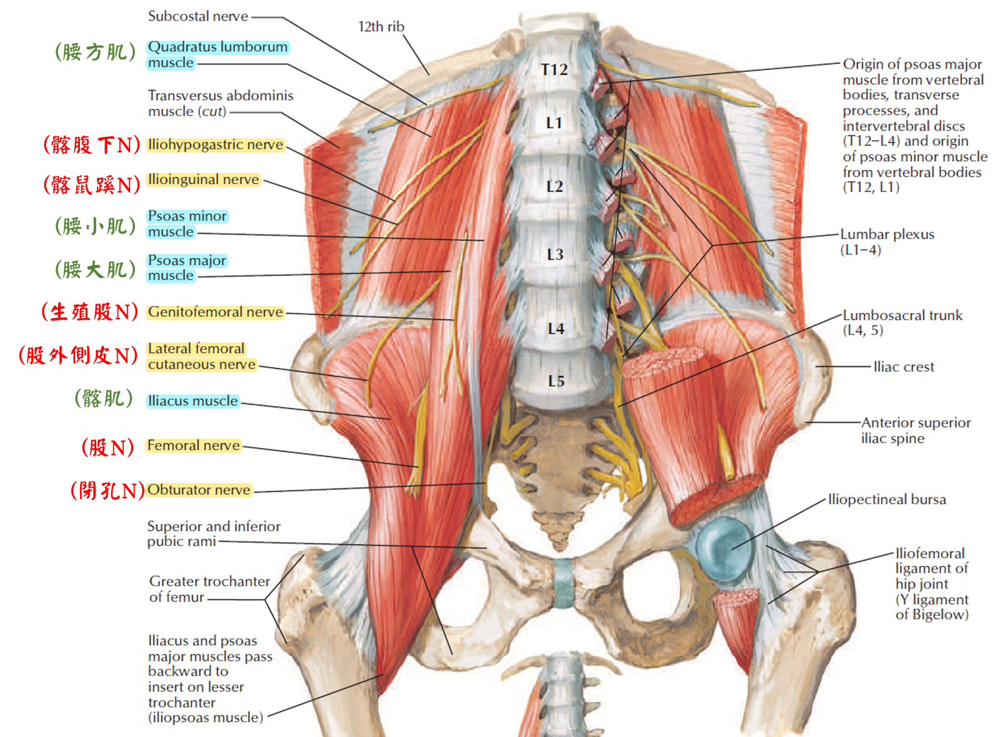
薦神經叢(L4~S3)
坐骨神經(sciatic ncrve；L4〜S3)：為全身最大條的神經
- 梨狀肌症候群：
- 病因：梨狀肌壓到坐骨N
- 症狀：臀部深處異常疼痛，疼痛感沿大腿後方至小腿
- 脛N(tibial nerve)→內蹠N & 外蹠N(med. & lat. plantar n)
- 走在★比目魚肌 & 脛後肌之間；★與脛後A伴行
- 運動：
- ★大腿後腔室：股二頭肌、半腱肌、半膜肌
- 小腿後腔室：膕肌、腓腸肌/比目魚肌/蹠肌(三頭)、脛後肌、屈姆趾長肌、屈趾長肌
- 足底：
- 內蹠N：外展姆肌、屈趾短肌、屈姆短肌、1st蚓狀肌
- 外蹠N：大部份足底內在肌
- 感覺：大腿後側、小腿後側、足底
- ★腓腸N(sural)：為脛N之皮膚感覺枝；位下肢外側，與小隱V伴行；傳遞小腿後外側&小腳趾之皮膚感覺
- 脛N損傷：足背屈&外翻=仰趾外翻足(calcaneovalgus)
- 總腓N(common Peroneal n)→淺腓N(★沒有血管伴行) & 深腓N(與脛前A伴行)
- 運動：
- 小腿前腔室(深腓N)：脛前肌、伸趾長肌、伸姆趾長肌、第三腓骨肌
- 小腿外腔室(淺腓N)：腓長肌、腓短肌
- 足背(深腓N)：伸趾短肌
- 感覺：小腿前側、足背
- 總腓N損傷：腓骨頸骨折→★垂足症(drop foot)[病人趴著開刀的話，也會壓到]
→足蹠屈&內翻=馬蹄內翻足(equinovarus)
- 運動：
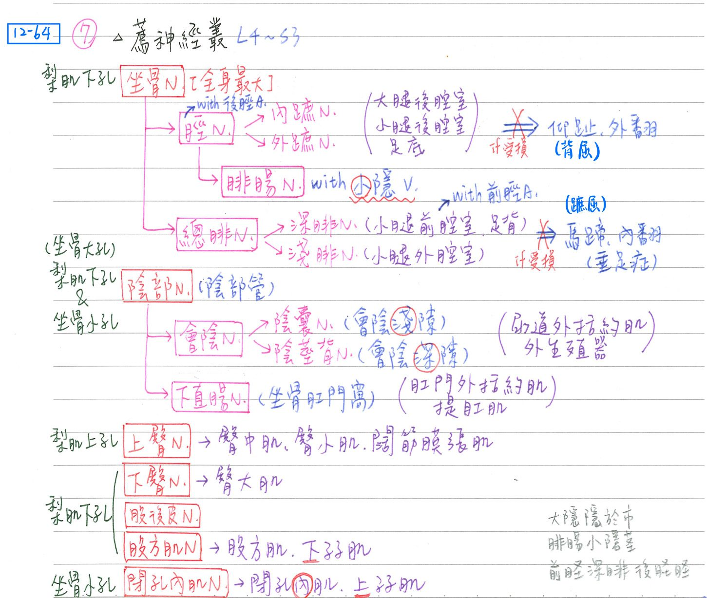
陰部神經(pudendal nerve；S2~S4)
- 位於陰部管(由閉孔内肌的fascia形成)
- 麻醉會陰部：陰部神經阻斷
- 經陰道黏膜：朝坐骨棘(ischial spine)之後側注射麻醉劑
- 經會陰皮膚：朝坐骨粗隆(ischial tuberosity)之內側注射麻醉劑
- ★[108-1]會陰N(perineal n)：支配尿道外括約肌、深横會陰肌、淺橫會陰肌、球海綿體肌、坐骨海綿融肌、外生殖器官、陰道下部
- 後陰囊(大陰唇)N (post. scrotal/labial n)：位於會陰淺隙
- 背陰莖(陰蒂)N (dorsal n. of penis clitoris)：位於會陰深隙
- 下直腸N：位於坐骨肛管窩
- 支配肛門外括約肌、提肛肌及肛管
上臀神經(sup. gluteal；L4~S1)：支配臀中肌、臀小肌、闊筋膜張肌
下臀神經(inf. gluteal；L5~S2)：支配臀大肌
股後皮神經(post. femoral cutaneous；S1〜S3)：支配臀皺褶附近之感覺
股方肌神經(L4~S1)：支配股方肌(quadratusfemoris)、下孖肌(inf. gemellus) [tip：放(方)下]
閉孔內肌神經(L5~S2)：支配閉孔內肌、上孖肌
<cf> 閉孔N(from腰神經叢)→閉孔外肌
- 通過坐骨大孔者：
- 梨肌上孔：上臀N
- 梨肌下孔：坐骨N、陰部N、下臀N、股方肌N、股後皮N
- 通過坐骨小孔者：陰部N、閉孔內肌N
- 同時通過坐骨大孔、坐骨小孔者：陰部N
特定區域之神經支配[應該肌肉系統都講過(並沒有)]
手部(hand)
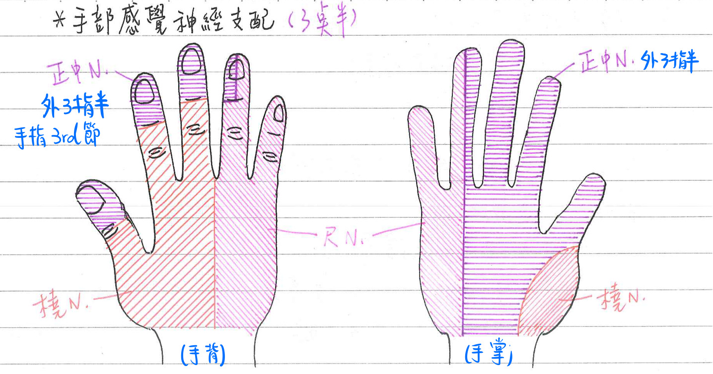
- 運動：
- 姆指：
- 橈N：伸拇長肌、伸拇短肌、外展拇長肌
- 正中N：外展拇短肌(正中N)、屈拇長肌、屈拇短肌、對指肌
- 尺N：內收拇肌
- 手掌：掌長肌(正中N)；掌短肌(尺N)
- 蚓狀肌：1st、2nd(正中N)；3rd、4th(尺N)
- 腹側、背側骨間肌：尺N
- 姆指：
- 感覺：
- 腹面：
- 手指：外3指半(正中N)；內1指半(尺N)
- 手掌：魚際區(橈N)；外側(正中N)；內側(尺N)
- 背面：
- 手指第3節：外3指半(正中N)；內1指半(尺N)
- 手指第1、2節：外3指(橈N)；内2指(尺N)
- 手掌：外側(橈N)；內側(尺N)
- 腹面：
足部(foot)
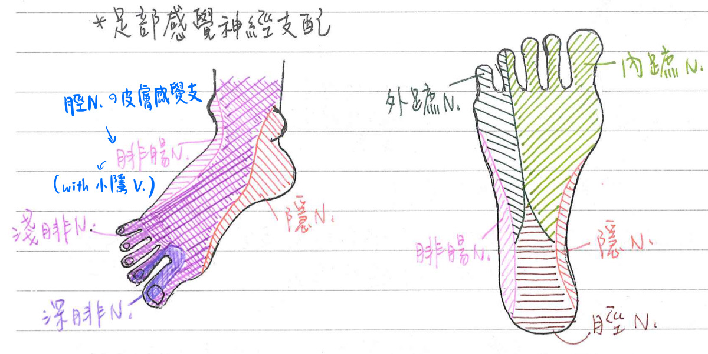
- 運動：
- 姆趾：
- 伸姆趾長肌：深腓N
- 外展姆肌：內蹠N
- 屈姆長肌(脛N)；屈姆短肌(內蹠N)
- 內收肌：外蹠N
- 蚓狀肌：1st(內蹠N)；2~4th(外蹠N)
- 腹側、背側骨間肌：外蹠N
- 姆趾：
- 感覺：
- 腹面：
- 鄰內踝區：★隱N
- 鄰外踝區：腓腸N
- 足跟區：脛N
- 前內側：內蹠N
- 前外側：外蹠N
- 背面：
- 鄰內踝區：★隱N
- 鄰外踝區：腓腸N
- 1~2nd趾間區：★深腓N
- 其餘部份：★淺腓N
- 腹面：
常見神經受損之徵象(sign)
- 垂腕症(drop wrist)：橈N受損
- 猿手(ape hand)：正中N受損
- 爪手(claw hand)：尺N受損
- 垂足症(drop foot)/馬蹄內翻足(equinovarus)：總腓N受損
- 仰趾外翻足(calcaneovalgus)：脛N受損
- 翼形肩胛(wing scapula)/天使翼：長胸N受損
特定神經之路徑(pathway)
- 膈N：經頸靜脈角後方、心包膜表面
- 右膈N：穿越橫膈之下腔靜脈裂孔
- 左膈N：穿越橫膈之無名孔
- 橈N：經三角間距、橈神經溝、肱三頭肌外側頭&內側頭之間；肱股外上髁上
- 與深肱A(上臂)、橈A(前臂)伴行
- 正中N：與肱A伴行；旋前圓肌兩頭(肱骨頭&尺骨頭)之間；腕隧道(掌長肌之下方)
- 尺N：與肱A(上臂)、尺A(前臂)伴行；經肱骨內上髁(後方)、尺側屈腕肌的兩頭(肱骨頭&尺骨頭)之間；腕隧道的上表面
- 肌皮Ｎ：穿越喙肱肌；位肱二頭肌&肱肌之間
- 腋下Ｎ：四角間隙
- 外胸Ｎ:穿過胸鎖筋膜(clavipectoral fascia)
- 長胸N：與外胸A(lateral thoracic)伴行
- 隱N(股N之皮膚感覺枝)：位下肢內側，與大隱V伴行
- 腓腸N(脛N之皮膚感覺枝)：位下肢外側,與小隱V伴行
- 生殖股N(之生殖枝)：位精索(spermatic cord)內
- 骼鼠蹊N：途經鼠蹊管(inguinalcanal)
- 閉孔N：被內收短肌分為前枝、後枝
- 總腓N：經腓骨頸
- 深腓N：與脛前A、足背A伴行
- 脛N：與脛後A伴行，走在比目魚肌&脛後肌之間
腦神經損傷
- 貝氏麻痺(Bell palsy)：顏面N受損(同側周圍神經受損)
- 若僅嘴角歪斜，但仍具額頭皺紋(只有下半臉有症狀)→對側CNS受損(如腦中風)
- 眼瞼下垂(ptosis)：動眼N受損
- Horner syndrome(眼瞼下垂、瞳孔縮小、半臉無汗：頸部交感神經幹受損
- 聲音沙啞(hoarseness)：返喉N受損
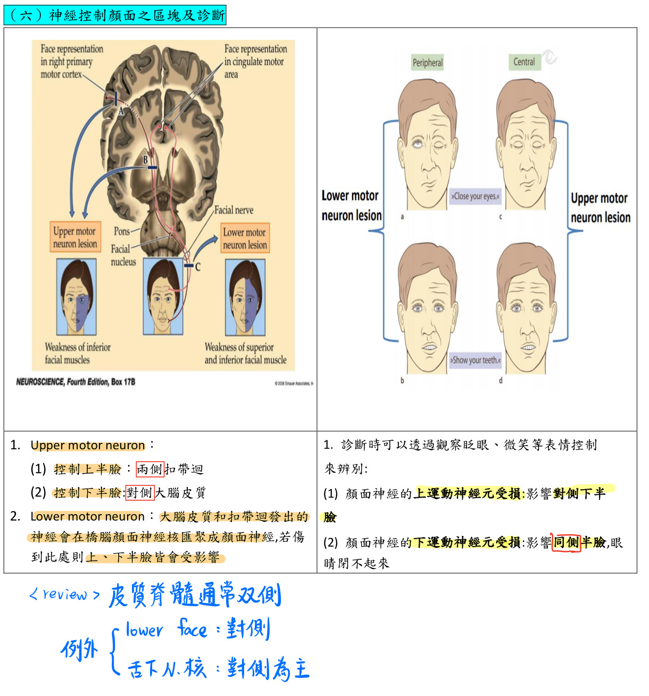
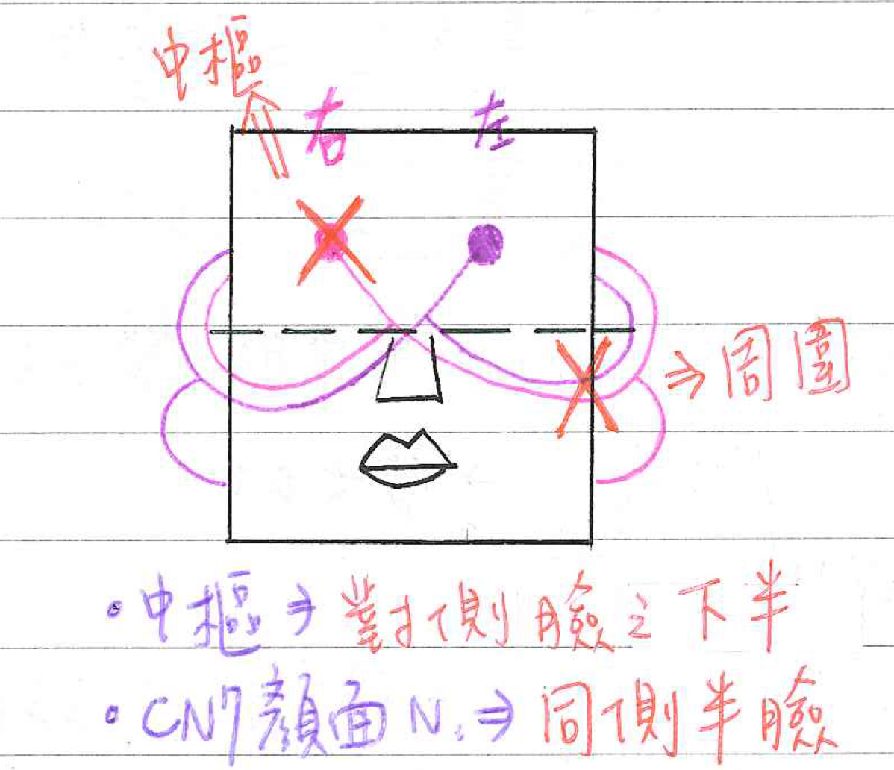
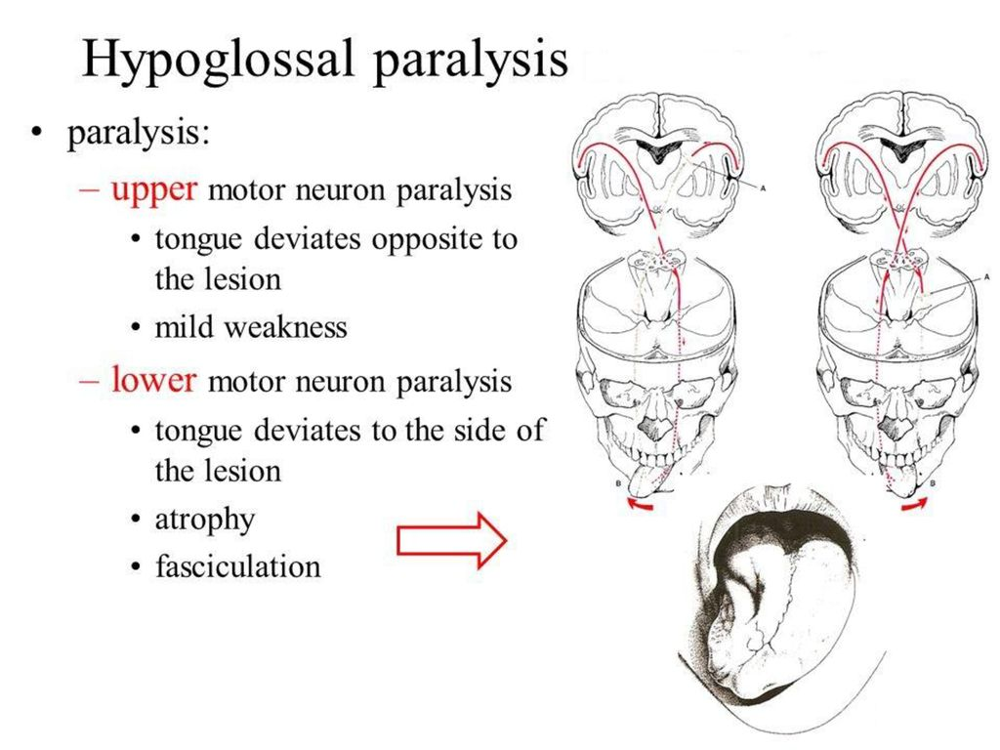
- ★[107-2]lower motor neuron受損：同側上下半臉皆會受影響
- upper motor neuron受損：影響對側下半臉
📖 書本補充：與筆記不同或筆記沒寫到的地方
⚠️
以下為對照書本後整理，筆記原文未更動。標「筆記 vs 書」的是兩邊寫法不同、建議回頭確認的地方。書是按身體區域編排，脊神經的內容散在各章，以下依筆記的順序整理。
脊神經總論與神經叢範圍（p.124、126）
- 書的表格：頸段 C1–C4＝頸神經叢、C5–T1＝臂神經叢；胸段 T2–T12＝肋間神經；腰段 L1–L4＝腰神經叢；薦段 L5–S3＝薦神經叢。
- 筆記 vs 書：筆記寫腰神經叢＝T12、L1–L4，薦神經叢＝L4–L5、S1–S3；書的表格是腰叢 L1–L4、薦叢 L5–S3。書在 105-2-22 解析補充「L4 雖然也經腰薦神經幹加入薦神經叢」，所以兩種寫法的差別在於是否把 T12、L4 算進去。
- 脊神經鑽出位置：頸椎只有 7 塊但頸神經有 8 條，C8 由 C7 與 T1 之間穿出，其餘頸神經從同號頸椎上方出；T1 以下每條脊神經從同號椎體下方鑽出，位置在椎間孔上半，所以 L5–S1 椎間盤突出壓到的是 S1（107-1-11）。
- 只含感覺纖維的是背根絲；背側支、腹側支都含感覺＋運動，腹根絲只有運動（109-1-12）。
頸神經叢與頸襻（p.556–558）
- 書的表格：頸神經叢 C1–C4，感覺支＝枕小、耳大、頸橫、鎖骨上，負責頸部到上胸部（鎖骨上）的皮膚；鎖骨上神經也支配肩膀的皮膚（113-1-7）。
- 膈神經：主要來自 C4；走在深筋膜椎前層的深層、前斜角肌前方、鎖骨下靜脈後方、主支氣管前方；支配橫膈（運動＋中央部的感覺）、胸膜（縱膈部及橫膈部）、心包膜。頸根處膈神經在總頸動脈外側、臂神經叢前面（103-1-6）。
- 膈神經在橫膈只負責比較中央的部分，沒有到胸壁；所以刺激橫膈中央壁層胸膜的轉移痛在 C3–C5 皮節（102-1-13）；漿液性心包膜壁層的痛覺也由膈神經傳遞（111-2-15）。
- 頸襻：上根 C1、下根 C2–C3，支配甲狀舌骨肌以外的舌骨下肌（胸骨舌骨、胸骨甲狀、肩胛舌骨）；甲狀舌骨肌是 C1 纖維搭舌下神經支配（106-2-17）。
- 耳大神經支配下頷角處皮膚；胸鎖乳突肌上 1/3 撕裂傷造成下頷角感覺喪失 → 耳大神經（枕小神經走耳朵後面，不支配下頷角）（107-1-4）。
- 肩胛上神經是臂神經叢的分支，不是頸神經叢（111-2-8）。
胸神經：肋間神經與前腹壁（p.149–152、201）
- 肋間神經的肌肉支支配肋間肌和後鋸肌（筆記沒寫）。
- 肋間 VAN 走在肋間內肌與最內層肋間肌之間，不是外、內肋間肌之間；第 5 肋間＝第 5 與第 6 肋骨之間；長胸神經走在前鋸肌表面，不鑽入肋間（109-2-26 解析）。
- 心肌梗塞時左前胸、左上臂的轉移痛屬體表感覺，由肋間神經傳導（106-1-19）。
- 前腹壁：第 7–11 肋間神經＋肋下神經（T12）支配前外側壁的肌肉和皮膚；肚臍約為 T10（107-1-22、112-2-21）。髂腹下、髂腹股溝支配腹下區和腹股溝區皮膚，以及腹內斜肌和腹橫肌的最下面。
- 筆記 vs 書：髂腹下神經的節段，筆記寫 T12–L1；書的前腹壁表（p.201）和腰神經叢圖（p.271）都寫 L1。
- 肋下神經穿過外側弓狀韌帶下方後支配前外側腹壁皮膚（109-2-27）。
臂神經叢（p.348–355）
- 記憶法：「Really tired? Drink coffee.」＝根、幹、部、索（Root、Trunk、Division、Cord）；索的名稱是依它與腋動脈的相對位置而定。
- 筆記沒寫的分支：
- 上幹：到鎖骨下肌的神經。
- 內側索：內側上臂及前臂皮神經（上臂、前臂內側皮膚）。
- 後索：上肩胛下神經＝肩胛下肌；下肩胛下神經＝肩胛下肌和大圓肌；胸背神經夾在上、下肩胛下神經之間，支配闊背肌。
- 肩胛上神經通過肩胛上橫韌帶的下方，支配棘上和棘下肌。記憶法：海軍（Navy＝Nerve）走橋下、空軍（Air force＝Artery）走橋上。
- 胸內側神經穿過胸小肌，支配胸大肌與胸小肌；胸外側神經穿過鎖胸筋膜。兩者是依起源（內、外側索）命名，但在胸部的最後位置反而內外顛倒。
- 正中神經：迴返支支配魚際肌及外側兩條蚓狀肌；最大分支＝骨間前神經；負責橈側 3½ 根手指掌側與部分手指背側的皮膚。
- 尺神經：通過內上髁後方（"crazy bone / funny bone"）；負責內側 1½ 根手指及相鄰手掌的皮膚。手指內收（夾紙片）靠骨間掌側肌，由尺神經深支支配（105-1-26）。
- 腋神經與旋肱後動脈一起通過四方形空間；橈神經與肱深動脈一起通過三角間隙。肱骨外科頸骨折易傷腋神經（108-1-10）。
- 橈神經在肘窩分成深、淺支：淺支沿肱橈肌深層走成為皮支；深支穿過旋後肌後成為骨間後神經，支配所有前臂背側的肌肉。
- 手部皮膚：手掌絕大部分由正中和尺神經負責，只有魚際區稍外側一小部分是橈神經；手背由三條神經一起負責（101-1-10：「橈神經負責整個手背」是錯的）。
- 正中神經受損 → 橈側屈腕肌（外展）無力，尺側屈腕肌作用相對變強 → 手腕屈曲無力並內收（100-1-1）。
腰神經叢（p.270–272）
- 書的表格：閉孔神經從腰大肌內側出來，支配大腿內側肌肉；生殖股神經穿出腰大肌的前方，生殖支進入精索支配提睪肌、股支進入下肢；腰薦神經幹沿薦椎翼下行，參與形成薦神經叢（101-2-7）。
- 書的提示：髂腹股溝神經和生殖股神經的生殖支都會進入腹股溝管，但髂腹股溝神經不進入精索（111-1-21）；髂腹下神經不走腹股溝管。髂腹股溝神經最後形成前陰囊（陰唇）神經（p.201）。
- 提睪肌由生殖股神經的生殖支支配（104-2-19、109-2-6）；肉膜肌是平滑肌，由自主神經支配，與腰神經叢無關（108-1-26）。
- 通過腹股溝韌帶與恥骨之間的是股神經；閉孔神經走恥骨後方的閉孔（104-1-23）。
下肢的神經（p.379–401）
- 股神經（L2–L4）：位在股三角內，支配恥骨肌、縫匠肌、髂腰肌、股四頭肌及大腿前內側皮膚；在膝部發出隱神經，穿過內收管後負責小腿和足部內側皮膚。
- 閉孔神經以內收短肌為界分前、後支：前支＝內收長和短肌、股薄肌、恥骨肌；後支＝閉孔外肌、內收短肌、部分內收大肌（書把內收短肌列在兩支下）。
- 坐骨神經（L4–S3）：脛支＝股二頭肌長頭、半腱肌、半膜肌；腓總支＝股二頭肌短頭。
- 筆記 vs 書：筆記把股二頭肌整條列在脛N的大腿後腔室；書上股二頭肌短頭由腓總神經支配，只有長頭是脛神經（109-1-29 解析也這樣寫）。
- 臀部：臀大肌血液來自臀上和臀下動脈，但神經只來自臀下神經；臀下動脈有一分支供應坐骨神經。
- 小腿：腓總神經繞過腓骨頸（腓骨頸骨折最常考腓總神經受損）；腓淺＝腓長、短肌及小腿前外側和足背皮膚；腓深＝小腿前面肌肉及第 1、2 腳趾間皮膚；脛神經走在小腿後方深淺層肌肉之間、比目魚肌深層，與脛後動脈伴行。
- 筆記 vs 書：腓腸神經，筆記寫「脛N 之皮膚感覺枝」；書的表格起源寫腓總和脛，107-2-10 解析也說它是脛和腓總神經的分支合併而成。
- 書的提示：足底內側神經相當於手的正中神經（足內側 3½ 趾感覺、外展蹞、屈趾短、屈蹞短、第 1 蚓狀肌），是足部主要的皮神經；足底外側神經相當於尺神經（蹠方、外展小趾、屈小趾短、骨間、外側 3 條蚓狀肌、內收蹞肌；外側 1½ 趾感覺），是足部主要的運動神經。內收蹞肌由足底外側神經支配，所以內蹠神經受傷不影響蹞趾內收（101-2-25）。
陰部神經（p.322–323）
- 肛門三角：直腸下神經 → 肛門外括約肌和皮膚。泌尿生殖三角：會陰神經分成會陰淺神經（發出陰囊／陰唇後支，負責陰囊後面或陰唇）與會陰深神經（會陰淺囊的肌肉及皮神經）；陰莖（陰蒂）背神經負責陰莖／陰蒂與會陰深囊的肌肉。
- 書的提示：會陰的骨骼肌皆由會陰深神經支配。
- 陰道下部屬體壁，觸覺經陰部神經；卵巢、子宮、輸卵管的感覺回到自主神經（103-2-21、104-1-21）。前陰囊神經是髂腹股溝神經的分支（108-1-28）。
📝 書中歷屆考題（點選答案作答）
107-1-11p.126
左側 L5~S1 腰椎間盤突出，突出位置偏中間，壓到的脊神經是：
💡 T1 以下的脊神經由同號椎骨下方、椎間孔上半鑽出，所以 L5–S1 椎間盤突出壓到的是 S1。
109-1-12p.126
下列脊神經 (spinal n.) 的分支中，何者只含感覺神經纖維？
💡 背側支、腹側支都有感覺及運動纖維；腹根絲只有運動纖維。
106-2-17p.557
下列何者不是由頸襻 (ansa cervicalis) 上、下根 (superior and inferior roots) 的分支支配？
💡 甲狀舌骨肌由來自 C1 的神經所支配。
107-1-3p.557
下列何者由源自 C1 的神經透過舌下神經 (CN XII) 來支配？
107-1-4p.557
車禍造成胸鎖乳突肌上 1/3 處的撕裂傷後，下頷角 (angle of mandible) 處的皮膚感覺喪失，下列何者最可能受傷？
💡 頦神經和面神經的路徑不經過胸鎖乳突肌上 1/3；枕小神經走到耳朵後面，不支配下頷角的皮膚。
113-1-7p.557
下列有關鎖骨上神經 (supraclavicular nerve) 之描述，何者正確？
💡 鎖骨上神經源自頸神經叢，支配肩膀及上胸部皮膚；頸闊肌屬顏面表情肌，由顏面神經支配。
111-2-8p.557
下列何者不是頸神經叢 (cervical plexus) 的分支？
💡 肩胛上神經是臂神經叢的分支。
105-1-15p.557
膈神經 (phrenic nerve) 起自哪個脊髓段位？
102-1-13p.558
刺激橫膈中央處的壁層胸膜 (parietal pleura) 所引起的牽涉痛 (referred pain)，其對應的皮區 (dermatome) 為：
💡 此處的胸膜感覺由膈神經負責。
103-1-13p.558
下列何者攜帶支配心包膜 (pericardium) 的感覺神經纖維？
103-1-6p.558
有關在膈神經 (phrenic nerve) 頸根處相關位置的敘述，何者正確？
💡 膈神經走在總頸動脈外側及前斜角肌前面；臂神經叢在前、中斜角肌之間，所以膈神經在臂神經叢前面。
111-2-15p.558
漿液性心包膜 (serous pericardium) 壁層 (parietal layer) 的痛覺由下列何者傳遞？
💡 漿液性心包膜的壁層貼在纖維性心包膜內面，兩者都由膈神經支配。
106-1-19p.150
心肌梗塞時產生左前胸或左上臂的轉移痛，此體表位置的感覺，由下列何者傳導？
💡 體表感覺不會由負責臟器的迷走或交感神經傳導；膈神經只負責橫膈較中央的部分，未到胸壁。
107-1-5p.151
肋間神經 (intercostal nerve) 之外側皮支 (lateral cutaneous branch)，一般由下列何處鑽出？
💡 肩胛骨線、正中鎖骨線分別在體壁後面和前面；肋骨角是肋骨體往前外側彎的位置，偏後方。
109-2-26p.152
有關肋間隙 (intercostal space) 之敘述，下列何者正確？
💡 第 5 肋間在第 5、6 肋骨之間；長胸神經走在前鋸肌表面；肋間神經走在肋間內肌和最內層肋間肌之間。
104-2-15p.202
下列何者不支配前腹壁構造？
💡 閉孔神經由後腹壁發出，支配大腿內側的肌肉。
107-1-22p.202
肚臍的皮節 (dermatome) 是：
112-2-21p.202
闌尾炎初期出現肚臍附近 (periumbilical) 疼痛感，此痛覺與下列何脊髓節段有關？
💡 肚臍附近的感覺（皮節）由 T10 脊神經負責。
102-1-27p.351
下列那一條神經受損，會造成肘關節屈曲 (flexion) 無力？
💡 屈肘的主要肌肉是肱肌和肱二頭肌，都由肌皮神經支配。
102-2-27p.351
下列何者穿過喙肱肌 (coracobrachialis) 後支配肱二頭肌 (biceps brachii)？
111-2-27p.351
下列那一條神經所支配的肌肉群同時具有屈曲上臂與前臂作用 (flex arm and forearm)？
💡 肱二頭肌跨過肩和肘關節，能屈曲上臂和前臂；其他選項支配的肌肉都只作用在上臂。
109-1-30p.352
上臂的肌皮神經 (musculocutaneous nerve) 受損時，下列何者最不可能因此而受到嚴重的影響？
💡 肌皮神經支配上臂的肌肉；肱橈肌在前臂。
107-2-31p.352
正常情形下，肌皮神經 (musculocutaneous nerve) 的末端會形成那一條皮神經？
101-1-8p.352
肱骨內上髁 (medial epicondyle) 骨折最可能傷害何者？
108-2-9p.352
下列何者走在肱骨內上髁 (medial epicondyle of humerus) 的後方？
102-2-26p.352
下列那一條神經受損會造成爪形手 (claw hand) 的症狀？
💡 尺神經損傷使第 4、5 指的蚓狀肌（可在指間關節伸展手指）無力，指關節因而屈曲。
102-2-25p.352
在上臂 (arm) 處，臂神經叢發出的那兩條神經沒有分支？
105-1-26p.353
下列何者受損會導致手指無法內收 (adduction) 夾住紙片？
💡 手指內收由骨間掌側肌負責，支配神經為尺神經深支。
111-1-29p.353
下列那一條神經，支配圖中黑色區域的表皮感覺？（原題附手背圖，黑色區域在手背的小指側）
100-1-1p.353
手腕屈曲無力並伴隨著手腕內收動作 (adduction) 的產生為下列何者受傷的徵兆之一？
💡 正中神經受損，其支配的橈側屈腕肌（外展）也受影響，尺側屈腕肌（尺神經）的作用相對加強，手腕因而內收。
103-1-25p.353
下列何者受損會導致手部拇指 (thumb) 無法做對掌 (opposition) 的動作？
112-2-31p.353
撞擊導致手肘部位的旋前圓肌 (pronator teres) 中央撕裂傷，下列何者最可能直接受到傷害？
💡 正中神經穿過旋前圓肌的兩個頭之間。
101-1-10p.354
下列有關手部神經支配的敘述，何者錯誤？
💡 尺和正中神經也支配手背一部分的皮膚。
106-2-18p.354
下列何者起自第五頸神經根 (C5 root)，且在頸部經常穿過中斜角肌 (middle scalene muscle) 後支配肩胛提肌 (levator scapulae muscle)？
💡 肩胛背神經也支配菱形大肌和小肌。
106-2-11p.354
下列何者是臂神經叢後索 (posterior cord) 支配闊背肌 (latissimus dorsi) 的分支？
💡 肩胛背神經支配提肩胛肌及菱形大、小肌；下肩胛下神經支配肩胛下肌和大圓肌；長胸神經支配前鋸肌。
112-1-27p.354
下列那一條肌肉由橈神經 (radial nerve) 支配？
💡 旋前圓肌和第 2 條蚓狀肌由正中神經支配；掌側骨間肌由尺神經負責。
113-1-29p.354
後骨間神經 (posterior interosseous nerve) 是那一條神經的分支？
108-1-10p.355
肱骨外科頸 (surgical neck of humerus) 骨折，最可能傷及那一條神經？
108-2-10p.355
腋神經 (axillary nerve) 受損時，下列那一塊肌肉無力？
💡 喙肱肌和肱二頭肌由肌皮神經支配；肱三頭肌受橈神經支配。
108-1-30p.355
肩胛上切迹 (suprascapular notch) 處的肩胛上神經 (suprascapular nerve) 受傷時，那兩塊肌肉會直接受到影響？
110-1-13p.355
下列那一條神經支配棘下肌 (infraspinatus muscle)？
💡 棘上和棘下肌位在肩胛骨後表面，都由肩胛上神經支配。
110-2-30p.355
前臂 (forearm) 的旋前圓肌 (pronator teres) 與旋後肌 (supinator)，分別是由那一條神經支配？
101-2-7p.271
在後腹壁，沿薦椎翼 (ala) 下行，組成薦神經叢的神經為：
💡 腰薦神經幹連接腰和薦神經叢，所以兩者有時合稱為腰薦神經叢。
104-1-23p.271
下列何者通過鼠蹊韌帶 (inguinal ligament) 與恥骨之間？
💡 髂腹下、髂腹股溝神經不會往下走到鼠蹊部位；閉孔神經通過恥骨後下方的閉孔。
106-1-23p.272
位於腰大肌 (psoas major muscle) 內側的腰神經叢分支是：
105-1-20p.272
下列何者出現於骨盆且直接源自腰神經叢 (lumbar plexus)？
💡 臀上神經和至閉孔內肌的神經雖在骨盆，但源自薦神經叢；骨盆內臟神經是 S2–S4 組成的副交感神經。
105-1-16p.272
下列何者不是腰神經叢的分支？
💡 後股皮神經是薦神經叢的分支。
108-1-26p.272
下列何者不受腰神經叢 (lumbar plexus) 受損影響？
💡 肉膜肌是平滑肌，由自主神經系統支配。
109-2-27p.272
下列何者穿過外側弓狀韌帶 (lateral arcuate ligament) 下方後，支配前外側腹壁的皮膚？
💡 閉孔、股神經並未穿過外側弓狀韌帶；選項 B 雖有穿過此韌帶，但支配的是恥骨區的皮膚。
111-1-21p.208
下列何者不在精索 (spermatic cord) 內？
💡 髂腹股溝神經有進入腹股溝管，但未進入精索內。
104-2-19p.209
下列何者受損時最可能影響提睪肌 (cremasteric muscle) 的收縮？
109-2-6p.209
下列何者支配提睪肌 (cremasteric muscle)？
101-2-16p.379
臀下神經 (inferior gluteal nerve) 受到壓迫損傷，下列何者會受影響？
💡 臀中肌、臀小肌、闊筋膜張肌由臀上神經支配。
101-1-6p.379
闊筋膜張肌 (tensor fasciae latae) 退化萎縮，可能因下列何者受損而造成？
104-1-15p.380
因神經受損而使得闊筋膜張肌 (tensor fasciae latae) 退化萎縮，下列何者可能也會受影響？
💡 闊筋膜張肌由臀上神經支配；臀大肌由臀下神經支配；梨狀肌和上孖肌分別由到梨狀肌及到閉孔內肌的神經支配。
109-2-9p.380
支配臀中肌 (gluteus medius) 的神經發炎，下列何者最可能同時受影響？
💡 臀中肌和闊筋膜張肌都受臀上神經支配。
101-2-17p.380
支配下孖肌 (inferior gemellus) 的神經受損，下列何者也可能退化萎縮？
💡 支配下孖肌的神經也支配股方肌；支配上孖肌的神經也支配閉孔內肌。
110-1-10p.380
支配閉孔內肌 (obturator internus) 的神經損傷時，下列何者的功能最可能同時受影響？
💡 「到閉孔內肌的神經」同時支配上孖肌。
109-1-29p.389
大腿後肌肉群，由下列何者支配？
💡 大腿後肌群包括由脛神經支配的膕旁肌，以及由腓總神經支配的股二頭肌短頭；脛和腓總神經都是坐骨神經的分支。
104-1-22p.389
閉孔神經 (obturator nerve) 前支損傷最可能造成下列何者無力？
💡 內收大肌有一部分（腿後部）受脛神經支配；內收長肌則完全由閉孔神經支配。
104-1-27p.394
脛神經 (tibial nerve) 走在下列那兩塊肌肉之間？
104-2-22p.394
下列何者支配的肌肉數目最少？
💡 腓淺神經只支配腓長和腓短肌；肌皮神經支配上臂三條肌肉；腓深、橈神經都支配多條肌肉。
101-1-9p.395
小腿骨折造成足踝無法背屈 (dorsiflexion)，下列何者最可能受傷？
💡 足踝背屈是小腿前腔室肌肉的作用，由腓總神經的分支腓深神經支配。
103-2-24p.395
腓骨 (fibula) 頸部骨折最可能傷及下列那一條神經？
108-2-8p.395
腓深神經 (deep fibular nerve) 傷害，最可能導致下列何者無力？
💡 腓長、短肌由腓淺神經支配；脛後肌由脛神經負責。
101-1-27p.395
車禍造成腓骨近側端骨折，下列何者最不可能出現？
💡 腓骨近端骨折傷到腓總神經，腓深神經負責的 A、B 和腓淺神經負責的 C 會受影響；D 由隱神經（股神經分支）負責。
103-1-21p.396
下列何者受傷，最不可能影響肌肉收縮？
💡 隱神經是感覺神經。
113-1-27p.396
足背大蹞趾外側與第二趾內側間皮膚感覺異常，最可能是下列何神經受損？
105-2-22p.396
車禍腰部受傷造成右小腿外側感覺喪失，最可能是右側那一條腰部脊神經受損？
💡 小腿外側由腓淺神經負責，屬薦神經叢（L5–S3）；L2–L4 形成腰神經叢，與小腿外側無關（L4 雖經腰薦神經幹加入薦神經叢，但與形成腓總神經較無關）。
102-2-28p.398
下列何者伴行脛前動脈 (anterior tibial artery) 且負責支配脛前肌 (tibialis anterior)？
104-1-28p.398
下列何者伴行脛後動脈 (posterior tibial artery) 且支配脛後肌 (tibialis posterior)？
107-2-10p.398
下列何者伴行小隱靜脈 (small saphenous vein)，且傳遞小腿後外側與小腳趾的皮膚感覺？
💡 腓腸神經由脛和腓總神經的分支合併而成，是小腿後外側的皮神經。
101-2-19p.398
下列何者在小腿沒有神經伴行？
105-1-23p.398
下列何者在小腿沒有血管伴行？
101-2-25p.401
內蹠神經 (medial plantar nerve) 受傷時，最不會影響下列何種動作？
💡 內蹠神經相當於手部的正中神經，所支配的肌肉和內收無關；內收蹞肌由足底外側（外蹠）神經支配。
103-2-21p.323
下列何者的一般體觸覺透過陰部神經 (pudendal nerve) 傳遞？
💡 卵巢、子宮、輸卵管的觸覺回到自主神經；陰道下部屬於體壁，體觸覺經陰部神經傳遞。
104-1-21p.323
陰部神經 (pudendal nerve) 受損對下列何者的影響最小？
💡 尿道的球海綿體肌和肛管的外括約肌都是橫紋肌，位在會陰部，受陰部神經支配；子宮受自主神經支配。
105-2-21p.323
在坐骨棘 (ischial spine) 處施行陰部神經阻斷術 (pudendal nerve block) 時，下列何處的感覺最可能受到影響？
💡 陰道上端和子宮屬臟器，不受陰部神經支配；陰阜由髂腹下神經負責；陰道前庭是陰道最表面，由陰部神經支配。
108-1-28p.323
下列何者不是陰部神經 (pudendal nerve) 的分支？
💡 前陰囊神經是髂腹股溝神經的分支。